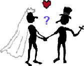

|
|
|
- evolve a high-nurturance stepfamily |
|
 |
Courtship Worksheet
Am I Committing to
the Right
People?
By Peter K.
Gerlach, MSW
Member,
NSRC Expert Council
|

 The Web address of this
worksheet is
http://sfhelp.org/sf/date/people.htm
The Web address of this
worksheet is
http://sfhelp.org/sf/date/people.htm
Updated
09/03/2015
Clicking underlined links here will open a
new window. Other links will open an informational popup,
so please turn off your
browser's popup blocker or allow popups from this nonprofit Web site.
If your playback device doesn't support Javascript, the popups may not display.
Follow underlined links after
finishing this article to avoid getting lost.
This is one of a series of Lesson-7 articles
on how to evolve a
(functional) stepfamily. The "/" in re/marriage and re/divorce
notes that it may be a stepparent's first union. "Co-parents" means both
biological parents, or any of the
three or more stepparents and bioparents co-managing a multi-home
.
| My clinical experience suggests that
cause
typical Americans (and others?) to
pick the wrong
to commit to, at the
wrong
for the wrong
It's widely estimated that
over
half of such couples with prior kids (stepfamilies) eventually
separate or re/divorce psychologically or
legally. |
This worksheet
extends
Part 1,
which shows right-partner traits for
all courting couples. This worksheet adds (a) traits if either partner has kids from a prior union, and (b)
traits of the right co-parents and stepkids to commit to.
This
worksheet assumes you're familiar with...
 Directions Directions
 Check to
see who's
your
If it's a well-meaning
expect your results here to be
To
empower your true Self to guide you, see these Check to
see who's
your
If it's a well-meaning
expect your results here to be
To
empower your true Self to guide you, see these
Print the
first part of this
worksheet and fill it out. When you finish, take a break if you need one.
Then print
this page and take ~30" of undistracted time to fill it out.
Invite your
partner to fill out both parts of this worksheet alone. When you're
both done, each of you
fill out the related right-time and right-reasons worksheets.
Then discuss your findings together
Check a trait as "true"
("__") only if you can check all sub-parts ("_"). The more items you
check, the higher the odds you're committing to
the right stepfamily partner + co-parents + stepkids. If you don't respond to these items
honestly, you risk hurting yourself, your partner, and any dependent kids.
Options:
your thoughts and feelings as you
fill out both parts of this
worksheet. Star or
highlight any items you want to learn more about or discuss.
|
Am
I Committing to the Right Partner? Part 2 of 2 |
Note - most links below will open an informational popup. If any open
a new window, scan that page and return here. "S/He" means "She or He."
Numbering continues from part-1 items
__ 29)
S/He acknowledges that if we co-commit, _ we will be forming or joining
a multi-home
so _ we must learn how to manage these
together to guard against potential re/divorce.
__ 30) S/He
has begun studying and discussing
with me, and _ s/he is self-motivated to learn and discuss...
_ typical
stepfamily facts,
myths,
realities, and common
_ minor kids'
developmental and
family-adjustment needs, and _ how to
assess kids' status with them;.
_
requisites for effective
co-parenting, and _ how stepparenting
compares to traditional bioparenting;
_ how to
recognize and manage loyalty,
vales, and family-membership conflicts and divisive relationship
triangles;
_ how to
recognize and reduce common
with co-parenting ex mates and problematic relatives;
_ pros and cons
of _ "ours-child" conception and _
legal stepchild adoption; and...
_ why and how to
maintain a high-nurturance
(functional) stepfamily.
__ 31) S/He
agrees without ambivalence or major guilt that in significant partnership conflicts,
her/his integrity (self-respect) will come first, our relationship will come second, and
all else will come third, except in emergencies.
If your partner is not a parent,
skip to courtship trait #39.
If
Your Partner Has Kids
__
32) S/He has no major relationship or legal
with the kids' _ other bioparent/s or _ relatives;
__ 33)
S/He _ has clearly
with each child and _ consistently demonstrates unconditional
and affection for them;
__
34) S/He _ has a realistic idea of
and _ is a consistently-effective parent, in my opinion. That includes
knowing how to...
_
communicate effectively with kids and
teens; and how to...
_ set and
enforce appropriate boundaries (discipline)
without undue guilt or anxiety; and...
_
spot and resolve vales and loyalty conflicts and relationship triangles,
and how to _ teach her/his kids and relatives how to do this.
__
35) S/He and I generally agree on _ what my stepparenting
should be, including _ how and when I should provide discipline for each
stepchild.
__
36) S/He consistently _ balances her/his own needs and
those of her/his kids; and s/he _ maintains healthy boundaries
with each child;
__
37) S/He has a stable, nourishing relationship with each of her
kids' grandparents, aunts, uncles, and cousins.
__ 38) S/He is
intentionally working to protect her kids from inheriting the lethal [wounds +
unawareness]
If
I Have Kids
__
39) S/He is comfortable being around children and teens in
general, and around my kids in particular.
__
40) S/He is _ comfortable with the way I parent, including
the way I discipline my child/ren; or _ s/he knows how to
manage any significant
with me.
__
41) S/He respects my needs to have some alone times with my
child/ren, and _ seeks to balance our adult time and my parent-child time.
__
42) S/He and my kids' grandparents and other relatives _ are
getting to know each other, and _ they all get along well enough;
__
43) S/He has studied these Q&A articles on
stepparenting and
stepkids, and has discussed them thoroughly
with me.
__
44) S/He and I have begun to _ define her
as a stepparent and _ to discuss these with relevant adults and kids.
__ 45)
S/He seems to get along with my parents and relatives well
enough.
+ + +
As I finish this part of the right-partner worksheet, I feel...
_ calm and relaxed;
_ that
my
answered each of these items thoughtfully and
honestly; and that...
_ I have no major anxiety or reservations about
discussing my answers here with
my partner and selected others.
+ + +
|
Am I Committing to the Right Co-parents?
|
Many
stepfamilies experience conflictual relations among ex mates and/or with their new partner ("the other
stepparent"). This section of the right-people worksheet provides a way
to identify significant problems among up to four other co-parents beside
your partner.
Directions
If either of you partners balk at including
each of your
stepkids' other bioparents and any new partners of theirs in your
stepfamily, discuss
this.
Check to
see who's
your
If it's a well-meaning
your results here may be distorted. To
empower your true Self to guide you, see these
Print this worksheet and put initials or
a name in each open column below for an ex-mate’s new partner, if any.
Don’t check a main item as
true unless all "_" subparts are checked.
Use "?" if you’re
unsure. Fudging your answers here puts you and any
minor kids at risk of future heartache and painful re/divorce
trauma.
If any item is inappropriate, skip it or mark it "N/A"
Fill this checklist out by yourself
to avoid your partner's presence biasing your answers. When you've both filled out
copies, then compare and discuss your results honestly after you
each have read the boxed articles above.
To guard against your answering what you
want rather then what is,
consider using knowledgeable, unbiased help in reality-checking
your assessments below
Check each co-parent who fits each item.
My Ex |
___ |
Your Ex |
___ |
Right-co-parent Traits |
| |
|
|
|
1) S/He _ understands the lethal [wounds +
unawareness]
and _ is open to discussing if and how it affects us all. |
| |
|
|
|
2)
S/He has begun studying
in this Web site, and _ is open to discussing them with me/us as a
parenting partner. |
| |
|
|
|
3) S/He is _ now
willing to clearly
whether s/he
has significant psychological
from a
(traumatic) childhood. If s/he has
already evaluated this, _
I solidly
agree with her/his conclusion. |
| |
|
|
|
4) If I think s/he is
significantly wounded, _ s/he is
clearly in a self-motivated
program now
that I trust is effective enough; or if not recovering yet,
_ s/he’s
willing to talk openly and seriously about
wound-reduction with me/us. |
| |
|
|
|
5) S/He now clearly
that _ if my partner and I commit, we’ll
all form or expand a multi-home
nuclear
together
which will be
_ very different from a typical one-home intact biofamily. |
| |
|
|
|
6) S/He clearly accepts
now that it’s in our minor kids’ best interest that all of the adults in our
kids'
related homes co-operate as a
team on
most child-care matters. |
| |
|
|
|
7) S/He
_ wants to learn about
the 60+ major differences between typical
stepfamilies and intact biofamilies and _ has begun doing so;
or
_ s/he says s/he will, soon enough for me. |
| |
|
|
|
8) S/He seems to be
independent enough emotionally and financially from her or his parents and
other key kin. |
| |
|
|
|
9) S/He
wants to learn about healthy grieving by studying and discussing
with us all. |
| |
|
|
|
10) S/He
_ seems to have mourned the
(broken bonds) from any former breakups and family endings well
enough, and _ clearly seems to be motivated to
move on with life. |
| |
|
|
|
11) His/Her
relationship with each minor and grown child in our stepfamily seems balanced
enough _ to me _ and my partner -
i.e. s/he's neither emotionally
nor too distant and
"indifferent." |
My Ex |
___ |
Your Ex |
___ |
Right-co-parent Traits |
| |
|
|
|
12) S/He seems content
enough now with current _ child custody,
_ visitation, and _ financial
support arrangements, including insurance, taxes, and wills, for each of the
kids in our stepfamily. |
| |
|
|
|
13) It seems highly unlikely now
that _ s/he would
legally sue us for changes in any of these, or that _ we would ever have to sue her/him. |
| |
|
|
|
14) S/He_
understands the
30+ special adjustment
needs that aver-age minor
stepkids must fill, or _ s/he is clearly
self-motivated to learn about them now. |
| |
|
|
|
15) I really trust that s/he’ll
help us assess each of our minor and
grown kids, to learn where they need our help filling their developmental and family
adjustment needs. |
| |
|
|
|
16)
S/He
_ clearly understands the
difference between fighting, avoiding, or arguing, and win-win
and
_ s/he seems self-motivated to do the latter with us when we
adults conflict on co-parenting
matters. |
| |
|
|
|
17) S/He is (or they are)
clearly and consistently
of their home, vs. strong-willed kids, kin,
ancestors, or
others. |
| |
|
|
|
18) I generally respect her/his
parenting _ values,
_
goals, _ judgment, and
_
behavior; and
_ I feel s/he usually respects mine enough. |
| |
|
|
|
19) I trust that _ s/he is not
currently
to
_ a substance
(including food, nicotine, caffeine, alcohol, prescription drugs, and street drugs);
_ an activity (including
work; working out; worship; a hobby; earning, spending, or saving money; etc.) or
_ a
(including a parent, a child, or ex mate); or
_
I trusst that
s/he’s solidly
committed to a self-motivated addiction-control program that seems effective enough to me
now. |
| |
|
|
|
20)
S/He _ knows what
and
conflicts and relationship
are, and _ what to do about each of them. |
| |
|
|
|
21) I’m comfortable enough with the _ frequency
and the _ ways s/he
and my partner communicate and relate now. |
| |
|
|
|
22) S/He seems
open enough to evolving a clear division of child-care
among all of us co-parents. |
| |
|
|
|
23) S/he’s
seems comfortable enough with my providing part-time or full-time discipline, guidance, and support for
our
minor and grown stepchildren. |
| |
|
|
|
24) I fully
trust
this person to be honest and direct in all verbal and written co-parenting
communications with _ me, _ us, _ related kin, _ all our stepfamily children,
and _ any key supporters. |
| |
|
|
|
25) S/He seems
open enough to _ all of us
adults evolving an effective
for our
and to
_
use it with us to help make healthy long-range stepfamily decisions. |
| |
|
|
|
26) I’m usually
comfortable enough with each of our minor and grown kids’
relationships with this person now. |
| |
|
|
|
27) Overall,
I feel s/he
is an (vs. a liability, big problem, or stressor) to our multi-home stepfamily now. |
| |
|
|
|
28) As I finish this
courtship-inventory section, I am _ calm
and relaxed and I’m
_ genuinely looking forward to discussing my answers with my partner and key others in our stepfamily. I _ feel my
filled out this
worksheet. |
Pause and notice what you're thinking and feeling now. If you just
identified significant problems among any of you co-parents, see this
perspective, and
this and
this for options.
A third wasy of assessing whether you're choosing the right co-parent
partner to commit to is by evaluating key factors about her or his kids -
your potential stepkids.
|
Am I Committing to the Right Stepkids?
|
Tension between you and a stepchild and/or between stepsiblings will add to inevitable stepfamily
and relationship
These
will come from your mate feeling s/he must choose between
supporting a beloved child or you. Ask veteran stepfamily co-parents and
counselors about these loyalty conflicts
- they're a major contributor to stepfamily stress and breakups.
In a significant minority of U.S. stepfamilies, one or
more noncustodial stepkids eventually come to live with their other bioparent - often as a teen.
In other stepfamilies, a grown stepchild may ask to move in with
their parent and stepparent. So in making courtship decisions,
don't discount the
importance of your relationship with any geographically-distant minor or grown
stepkids!
Have you and your prospective stepchild/ren been unrealistically polite and
tolerant of irritants so far to avoid courtship conflicts? A harsh
stepfamily reality is that courtship relationships may change significantly after
committing and cohabiting.
Directions
For
useful perspective,
before doing this worksheet. read the
30+
special adjustment tasks that typical minor and grown stepchildren face
Then...
Put each stepchild's
first name or initials at the top of the columns on the left below.
Include any adult stepkids. If you have more than four
stepkids, make a second sheet to rate each of them on the
items below.
Put a check in
the column for a given stepchild if you feel the item is clearly
true of him or her now. Don't check a column unless all "_" subparts are
true.
Ignoring this may significantly reduce the value of the worksheet. Use "?" if
you're unsure of a subpart or item. Fill out this worksheet one child at a
time, or rate several kids on each trait.
Option - rate your own kids as
well as your stepchild/ren.
The more undistracted time you
take
to consider each item honestly, the higher your odds of making
wise stepfamily-commitment decisions.
Star or
hilight items that evoke
significant emotions for later thought and discussion. Your emotions
often indicate unfilled needs.
If you have kids too,
ask your courtship partner to fill out a copy of this worksheet
separately. Then discuss your results and see what you
learn.
Draw no firm conclusions
until you've filled out
all six courtship-commitment worksheets .
Option -
write down your thoughts and feelings as you fill this out. You can learn as
much from the process of considering these items as you can from
your responses.
These items
check for symptoms of a child being raised in a dysfunctional family by
psychologically-wounded, unaware adults. More checkmarks = better.
| ___ |
___ |
___ |
___
|
Right Stepchild Traits |
| |
|
|
|
1) This child _ can describe clearly and
accurately enough - in age appropriate terms - why their bioparents
divorced or why their bioparent died. If not, _ s/he is clearly open to learning and
talking about that now. |
| |
|
|
|
2) S/He's clearly
the tangible and invisible
(broken bonds) from _ her/his
biofamily's breakup, and from _ our
adult partnership and/or cohabiting, well
enough._ My partner agrees with my
opinion on this now. |
| |
|
|
|
3) On a self-esteem scale of 1 to
10 (10 = high), _ I believe this child usually feels "six or more."
_ My partner agrees with this now. |
| |
|
|
|
4) Growing up, s/he's
been consistently encouraged to be a child - i.e. this child hasn't
felt (or doesn't now feel) overly responsible for home management or for a younger or
disadvantaged sibling's or a troubled bioparent's welfare. |
| |
|
|
|
5) This child seems to have a
healthy-enough attitude about her/his _ gender, _ sensuality, and
_ sexuality (if appropriate). |
| |
|
|
|
6) This child seems _ motivated enough and
_ successful enough now
with her/his _ schoolwork, _ activities, and/or _ job/s. |
| |
|
|
|
7) To my knowledge, this child
has never thought seriously about or tried _ suicide,
_ running away, or _ seriously harming someone or something. |
| |
|
|
|
8) I have no reason to believe
that this child is now, or ever has been, in significant trouble with _ the law;
_ school, church, or
community officials; _ gangs; _ cults; and/or _ harmful chemicals (including
food). |
| |
|
|
|
9) I'm comfortable enough now
with the quality and number of this child's _ social relationships, _ hobbies, and
_ interests. |
| |
|
|
|
10) I've _ never had any major concern
about this child's behaviors, psychological stability, or mental health. S/He
_ is not depending now on any medication for a chronic mood, behavioral, or sleep disorder. |
| |
|
|
|
11)
I have no reason to suspect that
this child has ever been significantly
_
physically, sexually, verbally, or spiritually;
or _
psychologically and/or physically.
|
| |
|
|
|
12) This child seems
genuinely accepting enough about (vs. indifferent or hostile to) her/his
parent's relationship with me now. |
| |
|
|
|
13) S/He _ understands and
_ accepts that we're considering
forming or joining a normal multi-home
and
_ s/he is able to talk honestly
enough with us about her/his related feelings and needs. |
| |
|
|
|
14) This child understands
clearly enough that _ s/he
doesn't have to love me or her potential step-relatives, stepsibs, or
half-sibs. S/He also understands that _ we all do need to
earn mutual
respect and trust. |
| |
|
|
|
15) This child is usually _ clear enough on what their/our
household rules and related consequences are, or _ s/he usually asks
promptly for - and listens to - clarification on those. |
| |
|
|
|
16) I _ don't feel any significant
urge now to
this child now. I
_ freely choose to
nurture this child, rather than feeling I must do so to please my partner
and/or someone else. |
| ___ |
___ |
___ |
___ |
Right Stepchild Traits
(continued) |
| |
|
|
|
17) I've had _ no significant
sexual
thoughts, fantasies, behaviors, or tensions with this child; and _ I have no significant
concern now about any sexual feelings or actions between this child and any other member
of our (potential) multi-home stepfamily. |
| |
|
|
|
18) I now have no significant
with _ my
partner, _ this
child, or _ any of
our other co-parents about discipline issues
with this child; or _ I'm confident now we all have a way of
these conflicts
effectively, and _ I feel we are making progress on this. |
| |
|
|
|
19) I solidly accept that _ I'll feel a different kind of
affection for this child than for my own biochild/ren (if any), and that it's
OK for me to not "love them equally." _
My partner and _ key others are genuinely comfortable enough with
this normal stepfamily reality. |
| |
|
|
|
20) This child is
usually co-operative enough in _ doing requested household chores and _
sharing appropriate family responsibilities. |
| |
|
|
|
21) As this child's (prospective)
stepparent, _ I'm
neither too detached nor too
with him or her._ My partner agrees with
this now. |
| |
|
|
|
22) This child and I are each _ comfortable
enough with our (potential) stepfamily role-titles: stepmother / stepfather,
stepson / stepdaughter, and stepbrother / stepsister. _ I feel
we use these titles
appropriately enough.
_ My
partner and _ our
other co-parents are _ comfortable enough with, and _ use these titles appropriately too. |
| |
|
|
|
23) I usually feel comfortable
enough being genuine and honest (vs. "being nice") around this child. |
| |
|
|
|
24) When I have a significant conflict
with this child, I usually feel _ legitimate enough about
each of our needs, values, and priorities, and
_ I feel understood enough and _ supported enough by my
partner. |
| |
|
|
|
25) (If applicable): I feel this
child and each of my minor and grown biokids usually get along well enough
or _ are moving toward mutual acceptance (vs. "love")
well enough. |
| |
|
|
|
26) I haven't felt
significantly used or ignored by this child - i.e. I get enough
respect, co-operation, and acknowledgement from him or her for the time, energy, and any money
I choose to contribute for the child. |
| |
|
|
|
27) I've _ thoughtfully deliberated
my
estate plan, have _ discussed it thoroughly with my mate and relevant others
(e.g. my biokids, and their other parent/s), and _ I'm clear enough now on
any bequests I want
to make to this (prospective) stepchild. _ No one is significantly
upset about my choices now. |
| |
|
|
|
28) All our co-parents have _ thoroughly
discussed and _ solidly agreed on
who shall provide _
life, medical, dental, and car
insurances, and _ any
current and/or higher-education funding for this child. |
| ___ |
___ |
___ |
___ |
Right Stepchild Traits
(continued) |
| |
|
|
|
29) For each
late-teen
custodial
stepchild: I'm currently clear and comfortable enough with _ this
child,
_ my partner, and _ our other co-parent/s and
kin about _ when
s/he'll leave our home and about _ any circumstances that might justify her
or his moving back in
later. |
| |
|
|
|
30)
For each minor custodial stepchild:
if s/he ever goes to live with her/his other bioparent, I'm confidant
that the resulting changes in and between our homes would not cause major
ongoing _ psychological
or _ financial
stress for
_ my
partner and me,
and/or _ other key
people. |
| |
|
|
|
31) For each
non-custodial
minor or grown stepchild: If s/he came to live with us, I
feel confidant enough that my partner and I would not experience any major new
conflicts or tensions with _ them, _ each other, or
_ with their other co-parents or kin. |
| |
|
|
|
32) I've thoughtfully _ considered the pros and cons
of legally adopting this child, _ discussed this thoroughly with all our other co-parents and this
child, and _ we all have reached
a solid decision about this. |
| |
|
|
|
33) I usually _
like, _
trust, and _
respect this child, and _ often enjoy
having her or him around; or if I don't, my partner and I _ have
talked well about it, and
_ are not seriously conflicted about this now. |
If
you rated one of several stepchildren, go back and rate the next one.
Notice how you feel
now, and where your thoughts go. What did you learn from filling out this
long right-people worksheet? Is there anything you need to do now?
Does the proposal that one
cause of widespread stepfamily stress is that needy, unaware co-parents impulsively
commit to the
wrong people seem more credible?
As I finish this
courtship
worksheet I
feel…
and I'm aware of ...
 Options Options
Give
a copy of this
two-page worksheet to
your partner, and compare and discuss results honestly with them after
s/he fills them out.
Show this courtship worksheet to a trusted
mentor or
and ask them to help you reality-check your answers. Your need and love for
your partner and possible psychological
may
your results here
if your true Self is disabled.
Fill out and discuss this worksheet on relationship
strengths and stressors
with your partner.
Review this summary of healthy-relationship
requisites with your
partner.
+ + +
There is no formal "scoring" formula for this worksheet. The more
items you checked on part 1
and this page, the more likely you are to choose the right
people to commit
to.
|
Even if you and your partner can check to most of these right-people items
as "true," you may still commit to each other for the wrong
reasons, at the wrong time. Use the related
worksheets to guard against
this. |
Recap
This is the second of two worksheets to
help courting co-parents choose the
right people to commit to. The worksheet exists
because a high percentage of average American (and other?) stepfamily mates eventually
re/divorce psychologically or legally - i.e. they make unwise courtship
choices. This online
provides a way to avoid re/divorce and end the lethal [wounds +
unawareness]
that causes it.
 Prior page / Lesson 7
/
Print page
Prior page / Lesson 7
/
Print page
site
intro /
course outline /
site search /
definitions / chat
/ contact
|